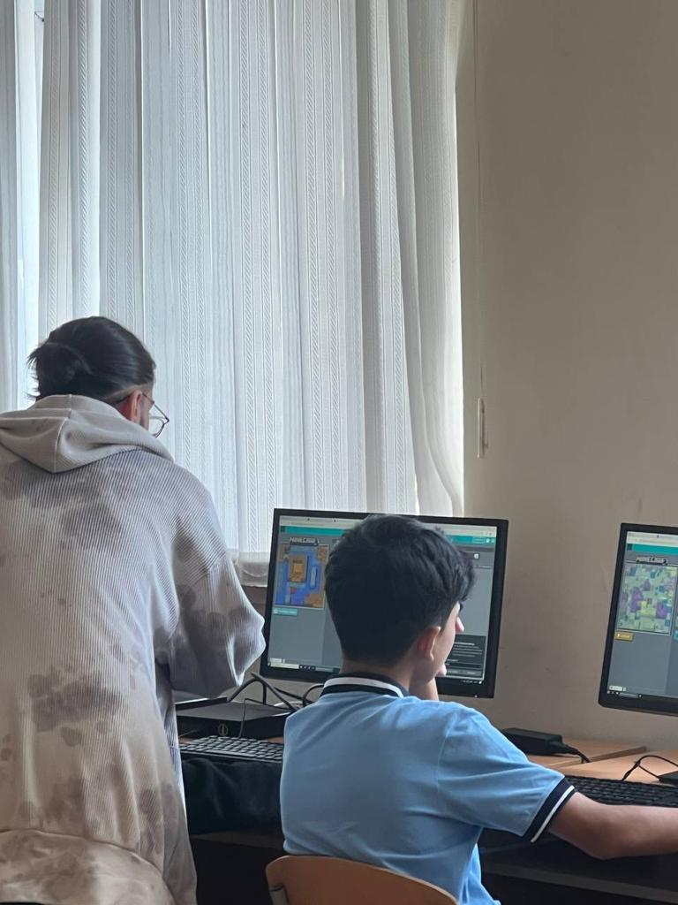

HOUR OF CODE DESCRIPTION
Hour of Code is a global event about coding.
The Hour of Code is a global initiative occurring annually during Computer Science Education Week, usually in early December.
It is designed to introduce individuals, especially students, to the fundamentals of coding and computer science.
The main objective is to debunk the complexities of coding, highlighting that anyone, regardless of their background or age,
can grasp the basics of programming.
Participants in the Hour of Code are encouraged to dedicate at least one hour to coding activities, which can include guided tutorials and hands-on projects.
The focus is on creating an accessible and enjoyable coding experience, emphasizing creativity and problem-solving skills.
This initiative, organized by Code.org, seeks to inspire interest in computer science and foster a sense of inclusivity in the world of programming.
Group members
Team Star members: Atilla Ehmedli, Zahra Aliyeva, Mehdi Nasirli, and Rubabe Khalilova.
All group members are SITE students and have a great passion for their faculty.
Mehdi and Atilla are 18 years old, while Zahra and Rubabe are 17 years old.
This is their first year at ADA University.
All members are interested in coding, playing interesting games, and learning new things.
Both Atilla and Mehdi major in electronics, and their main hobby is spending time in front of the computer.
Zahra majors in computer science and Rubabe majors in IT. Rubabe's and Zahra's hobby is reading and drawing, respectively.

| Team Star |
Atilla Ahmadli |
Mehdi Nasirli |
Rubabe Khalilova |
Zahra Aliyeva |
| Program of Study |
Electric and Electronic Engineering |
Electric and Electronic Engineering |
Information Technologies |
Computer Science |
| Applied Skills |
- Design of Activity Program
- Oral Presentation
- Translation of Study Material
|
- Design of Activity Program
- Editing of Printed Material
- Preparation of Slides
|
- Design of Activity Program
- Editing of Printed Material
- Preparation of Slides
|
- Design of Activity Program
- Development of Instructions
- Photography
|
| Contact Information |
Facebook |
Main Event
Team Star conducted Hour of Code in Baku Secondary School No. 44. 23 sixth-grade students were present in class.
With 6 computer-based and paper-based activities, pupils participated in both individual and teamwork.
Students patiently solved given problems and learned unfamiliar terms. We tried to explain this information through slides and games to make it more interesting for children.
The students' appreciation of this knowledge and respect for us caused them to say heartwarming thoughts about the students of school No. 44. In addition, on Code.org, children have shown how they are actively absorbing our knowledge.
Gallery